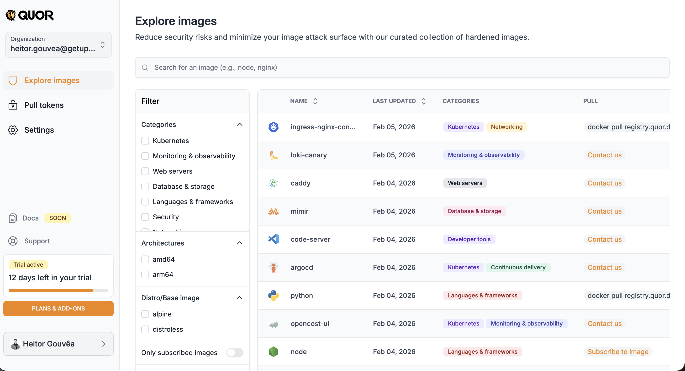
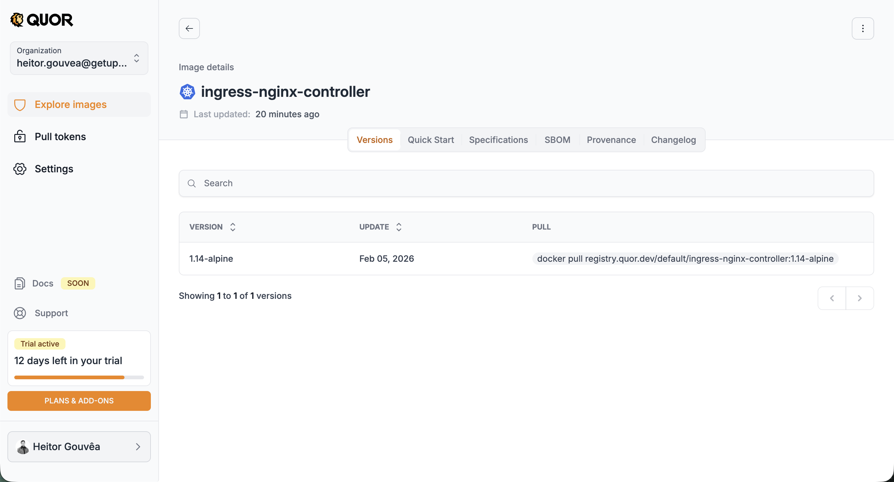
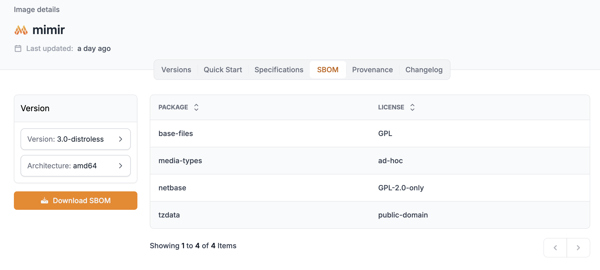
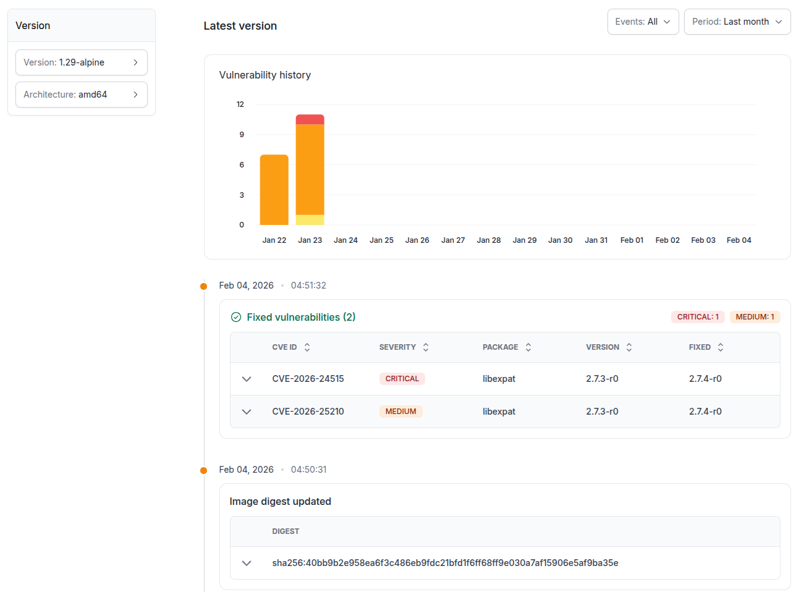

Image catalog¶
Explore Images¶
In the Explore Images section, you have access to the complete Quor image catalog.

The list displays, for each image:
- Name;
- Last update date;
- Category(ies) (e.g.: Kubernetes, Monitoring & Observability);
- Available action (PULL):
- Subscribe to image → for images available on your plan;
- Contact us → for images available only on the Enterprise plan (Trial users);
- Docker pull command → for images already subscribed and ready to use.
Important
The image path (required for docker pull) is only displayed after subscription.
In addition to the list, the screen offers features to locate specific images:
- Search bar: search by name (e.g.: nginx, node, prometheus).
- Side filters:
- Categories: Kubernetes, Monitoring & Observability, Web servers, Database & storage, Languages & frameworks, Security, Networking;
- Architectures: amd64, arm64;
- Distro/Base image: alpine, distroless.
- Only subscribed images: toggle to display only images already subscribed by your organization.
Image details¶
When you click on an image, you access the details page with complete information organized in tabs:

Versions¶
Lists all available versions of the image, with update date and docker pull command for each one. When clicking on a specific version, you can view its packages and vulnerabilities, as well as scan instructions.
Quick Start¶
Quick guide with usage instructions for the image, including deployment examples for Kubernetes, Helm, and Dockerfile.
Specifications¶
Technical specifications of the image, such as architecture, size, and configurations.
SBOM¶
The SBOM (Software Bill of Materials) lists all packages contained in the image, with their respective licenses. You can select the desired version and architecture and download the complete SBOM.

Provenance¶
Provenance information for the image, attesting to its origin and integrity. For all images and versions, this evidence set includes SBOM, signature, provenance attestations, and VEX statements to add exploitability context to vulnerability analysis.
Changelog¶
The Changelog displays the vulnerability history of the image over time. It includes an evolution graph and a detailed list of detected vulnerabilities, with CVE ID, severity, affected package, version, and fix status.

Requesting new images¶
The Quor catalog is continuously expanded, with new images added in regular cycles. Additionally, users can request the inclusion of specific images.
Request criteria¶
Requests are evaluated according to the following requirements:
- The project must be open source;
- The license must be compatible with redistribution;
- The requested version must be under active security support (not EOL).
Note
Support verification is based on endoflife.date.